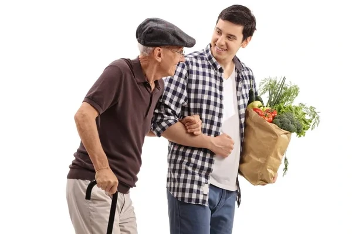
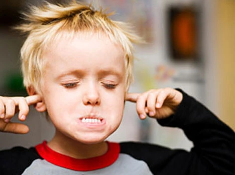
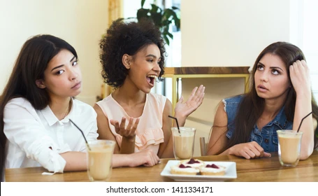

Sensitive
A person who understands others' feelings or gets hurt easily.
"He is very sensitive, so please don't criticize his work."
Vocabulary for emerging B1 Level
A person who understands others' feelings or gets hurt easily.
A person who makes good, practical decisions based on reason.

A person who behaves in a way that is socially correct and shows respect.
A person who speaks or acts in a way that is not polite or respectful.
A person who is willing to listen to and accept other people's ideas.

A person who refuses to change their mind or plans.
A person who keeps promises and is devoted to their partner or beliefs (Trust/Devotion).
A person who always supports their friends, team, or employer (Support/Allegiance).
A person who is sure about their own abilities and ideas.

A person who thinks they are better or more important than other people.
A person who strongly wants to be successful, rich, or powerful.
A person who is unhappy because someone has something they want.
A person who wants to know or learn about something new.

A person who likes to speak a lot.
A person whose feelings change often and quickly.